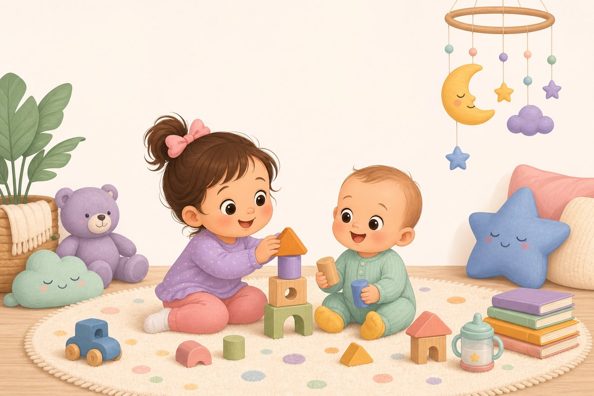

Gentle, evidence-based daily rhythms balancing sleep, nutrition, and play-based learning, made just for your two.

Aydin's Day
7 months · building on solids · 3 naps · ~16h sleep target
Total sleep / 24h
~16 hrs
Top of AAP 12-16h range
Night sleep
~11.5 hrs
6:45 pm → 6:30 am
Naps
3 naps
~4.5 hrs · wake windows ~2-2.5h
Feeds
4-5 milk
24-32 oz + 3 solid meals
Built for ~16 hours (top of the healthy range): most growth hormone is released during deep sleep, and consolidated sleep drives the memory and rapid brain wiring of the first year. To reach ~16h we pair a ~11.5-hour night (early 6:45 pm bedtime) with three solid naps and shorter ~2-2.5h wake windows. 16h is the upper end of the AAP range — treat it as a target and always follow Aydin's own sleepy cues; a little less on any day is perfectly healthy.
Sample Day
Nutrition
Milk still leads, solids are ramping up
Breast milk or formula: 24-32 oz/day across 4-5 feeds. Milk stays the main source of nutrition until 12 months.
Solids, 2 to 3 meals a day: Aydin is ready for more variety and texture, thicker purees, mashed foods, and soft finger foods (baby-led weaning is fine).
Iron and zinc are the priority nutrients now that birth iron stores are running low. Offer an iron-rich food at every meal: iron-fortified cereal, well-cooked egg, pureed or shredded meat, lentils, beans, tofu.
Pair iron with vitamin C (fruit or veg) to boost absorption for brain growth.
Allergens: keep offering peanut, egg, and dairy in baby-safe forms, early and regularly, once tolerated.
Open cup: a few sips of water with meals is enough at this age.
Avoid: honey, cow's milk as a drink, added salt and sugar. Cut round or hard foods small and soft to prevent choking.
Play & Early Learning
Learning happens through the senses
Sitting & tummy time: short daily sessions build the core and back strength for sitting steadily and crawling.
Sensory play: safe textures, crinkle toys, silicone teethers, cool spoons. Mouthing is how babies explore.
Face-to-face talk & song: narrate, sing, and copy his babbles. This is the foundation of language.
Peekaboo & mirror play: supports object permanence and self-recognition.
Cause and effect: rattles, drums, stacking cups to bang and drop.
Reading: chunky board and touch-and-feel books, a few short sessions a day.
Ana's Day (Home)
2 years · non-school days · one nap, ~12 hours of sleep
Total sleep / 24h
~12 hrs
Range 11-14h (AAP/AASM)
Night sleep
~11 hrs
Consistent bedtime
Nap
1 nap
~1.5 hrs midday
Meals
3 + 2 snacks
~2 cups whole milk
Protecting the 12 hours: a predictable bedtime routine plus one solid midday nap keeps Ana near 12 hours total, supporting height (deep-sleep growth hormone), mood, memory, and the language explosion typical at this age.
Sample Day
Nutrition
Balanced plates, small portions
Structure: 3 meals + 2 planned snacks at roughly the same times daily. A toddler portion is about a quarter of an adult's, roughly 1 tablespoon per food per year of age.
Every day, across the 5 groups: fruits, vegetables, grains (half whole grain), protein (eggs, beans, chicken, fish, tofu), and dairy.
Milk: about 2 cups (16 oz) whole milk a day. Too much milk crowds out iron-rich food and blunts appetite.
Iron + vitamin C together (beans with tomato, meat with peppers) boosts absorption for brain growth.
Water between meals; limit juice to 4 oz/day or less and skip sugary drinks.
Picky is normal: keep offering new foods without pressure. You choose what and when, Ana decides how much.
Cut round foods (grapes, hot dogs) lengthwise to prevent choking.
Play-Based Learning
Play is how toddlers learn
Language: narrate the day, read together often, sing action songs. This is peak vocabulary-building age.
Fine motor: stacking blocks, big-knob puzzles, crayons, playdough, pouring and scooping.
Pretend play: toy kitchen, dolls, play phone, grows imagination and empathy.
Early concepts: sort by color and shape, count steps, big vs small, simple matching.
Sensory & art: water play, sand, finger paint, gluing, for creativity and focus.
Screens: AAP suggests limiting to a little high-quality co-viewing. Play and interaction beat screens for learning.
Ana's Day (School)
2 years · school days · target ~14 hours of sleep
Total sleep target
~14 hrs
Top of AAP 11-14h range
Night sleep
~12 hrs
7:00 pm → 6:45 am
School nap
2 hrs
1:00-3:00 pm · fixed
Bedtime
6:45-7:00
Early, to protect 14h
The sleep math: the school nap is a fixed 2 hours (1:00-3:00 pm), so to reach ~14 hours we build the night around it — a ~12-hour night (about 7:00 pm to 6:45 am). That means an early, protected bedtime is the single most important lever. If she resists 6:45-7:00, a 7:15-7:30 bedtime still lands ~13.5 hours.
School's Own Schedule fixed · set by school
Shown in gray because this part is run by the school — outside our control. It's summarized here so the home routine below can be planned around it (especially the 1:00-3:00 pm nap).
Proposed Rhythm for ~14h Sleep what we control
The home hours (morning + evening) tuned around the fixed school day to hit the ~14-hour goal.
How to protect the ~14 hours on school days
Guard the early bedtime above everything else. Lost night sleep can't be made up by the fixed 2h nap, so start bath by 6:30 and lights out by 7:00.
Ask the school to keep her 1:00-3:00 nap consistent — full 2 hours, same cot and routine. This is the anchor the whole plan rests on.
Wind down early: dinner by ~5:45 and only calm play after pickup. Bright screens and rough-and-tumble before bed push bedtime later.
Hearty breakfast — school snack isn't until 9:50 and lunch ~11:30, so a protein-rich breakfast at home carries her through the morning.
Watch for a nap that runs long or late: if the 2h school nap ever pushes past 3:00, bedtime can slip — flag it with teachers.
If she drops the school nap on any day, move bedtime earlier still (6:15-6:30) so total sleep stays near the goal.
📚 Sources & research notes
American Academy of Pediatrics / AASM sleep-duration guidance: infants 4-12 mo need 12-16h and toddlers 1-2 yr need 11-14h per 24h, including naps. HealthyChildren.org
7-month sleep norms: ~13-15h total, 2-3 naps, wake windows ~2.5-3.5h (pediatric sleep references).
Growth hormone is released mainly during deep (slow-wave) sleep, supporting children's physical growth.
"Infant sleep and its relation with cognition and growth" narrative review, sleep, brain development and growth.
CDC Infant & Toddler Nutrition; USDA MyPlate; Nemours KidsHealth and Johns Hopkins, toddler portions and food groups.
Huckleberry & BabyCenter 7-8 month feeding: 24-32 oz milk + solids 2-3 times a day, plus finger foods / baby-led weaning.
AAP guidance on introducing allergens early and prioritizing iron-rich first foods.
⚠️ General guidance, not medical advice. Every child is different. These are flexible templates to adapt to Aydin and Ana's own cues and your pediatrician's advice. Follow hunger and sleepiness signs over the clock.